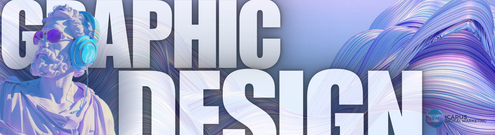
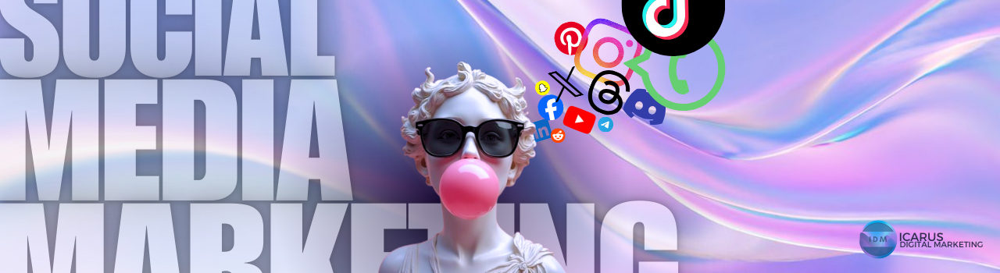

The Power of Professional Photography in Digital Marketing Campaigns

In the visually-driven world of digital marketing, the adage “a picture is worth a thousand words” has never been more accurate. Professional photography has become an indispensable tool for businesses looking to capture attention, build trust, and create emotional connections with their audience. Here’s why professional photography is a powerful asset in digital marketing campaigns and how it can elevate your brand’s success.
Capturing Attention in a Crowded Digital Space
In a world where people scroll through content at lightning speed, visuals have the power to stop them in their tracks. High-quality, eye-catching images can make your content stand out in a sea of generic stock photos and poorly lit snapshots. Whether it’s for social media posts, email campaigns, or website banners, professionally shot photographs create a striking first impression that compels users to explore further.

Beyond just grabbing attention, professional photography conveys an immediate sense of professionalism and quality. It signals to your audience that your brand cares about the details, setting you apart from competitors who rely on subpar visuals. Furthermore, the emotional impact of an expertly captured photo is unmatched. Whether it’s a close-up of your product, a warm image of your team, or an action shot that tells a story, professional photography has the power to evoke emotions that resonate deeply with your audience.
In an age where attention spans are fleeting, visuals are often the deciding factor in whether a potential customer engages with your brand or moves on. By leveraging professional photography, you not only capture attention but also create a lasting impression that compels your audience to explore further.
Establishing Brand Identity
Your brand’s visual identity is an extension of its personality. Professional photographers can help you craft images that align with your brand’s colors, tone, and message. Whether you’re aiming for a sleek, modern vibe or a warm, approachable feel, custom photography ensures consistency across all your digital marketing channels.
Professional photographers understand that every brand has a unique story to tell. By working closely with your team, they can create images that align perfectly with your brand’s colors, tone, and message. This level of customization is essential for establishing and reinforcing your brand’s personality. For example, if your brand exudes sophistication and innovation, clean, minimalist images with sharp details can emphasize that sleek, modern vibe. On the other hand, if your brand seeks to connect on a more personal and approachable level, warm, natural lighting and candid shots of your team or customers can convey authenticity and friendliness.
Furthermore, professional photography allows you to highlight the unique aspects of your brand that generic stock images simply cannot capture. Whether it’s showcasing your products, capturing the culture of your workplace, or creating aspirational imagery that reflects your brand’s mission, custom photos offer an authenticity that resonates deeply with your audience.
In a competitive marketplace, a strong and distinct visual identity can set your brand apart. By investing in professional photography, you’re not just creating beautiful images—you’re building a visual narrative that communicates your brand’s values, inspires loyalty, and leaves a lasting impression on your audience.
Building Credibility and Trust
Authenticity is crucial in the digital age. Generic stock photos often feel impersonal and fail to convey the uniqueness of your business. Professional photography allows you to showcase your team, products, services, and workplace in an authentic and relatable way. High-quality images signal professionalism and credibility, helping customers feel confident in choosing your brand.
In today’s digital age, authenticity isn’t just a buzzword—it’s a core value that consumers expect from the brands they engage with. When people interact with your business online, they look for signs of genuineness and transparency. Unfortunately, generic stock photos, while convenient, often fall short in this regard. They lack the personal touch that tells your brand’s unique story and can come across as insincere or disconnected. Professional photography, on the other hand, allows you to create imagery that reflects the true essence of your business, helping to build credibility and trust with your audience.
One of the biggest advantages of professional photography is the opportunity to showcase the real people, products, and spaces behind your brand. Instead of relying on staged or overly polished stock images, you can highlight your actual team members, giving customers a glimpse of the faces behind the company. This fosters a sense of connection and humanizes your business, making it easier for people to relate to and trust you.
Moreover, high-quality images signal professionalism and attention to detail. When customers see that you’ve invested in creating stunning visuals, it conveys that you take your business—and their experience—seriously. A polished online presence supported by custom photography sends a strong message that you’re trustworthy and dependable. In contrast, low-quality or irrelevant images can create doubt and leave a negative impression.
“ Most good programmers do programming not because they expect to get paid or get adulation by the public, but because it is fun to program. The joy of building something, of making it work, is a powerful drive. For many, it’s this passion that keeps them going, even when the challenges seem impossible.
- Linus Torvalds, creator of Linux and Git “
Boosting Engagement and Conversion Rates
Visual content significantly impacts engagement metrics. Social media posts with professional photographs generate more likes, shares, and comments compared to those with low-quality visuals. Moreover, when paired with compelling copy, well-crafted photos can drive higher click-through rates and conversions, whether it’s a product purchase, newsletter signup, or inquiry submission. 
Supporting SEO Efforts
Search engines favor websites with optimized, high-quality images. By using professional photography alongside descriptive alt text, your site becomes more appealing to users and search algorithms alike. Pages with visually engaging content tend to have lower bounce rates, which can positively impact your search engine rankings.
Customization for Your Unique Campaigns
Stock photos might suffice for some campaigns, but they lack the ability to represent your unique vision. Professional photographers work closely with your team to create images that highlight your brand’s story, values, and key selling points. This personalized approach allows your campaigns to connect with your audience on a deeper level.
The ROI of Professional Photography
While investing in professional photography may seem costly upfront, the long-term benefits far outweigh the initial expense. High-quality images can be repurposed across various platforms, from your website and social media to brochures and ad campaigns. This versatility ensures you get maximum value from your investment.
Conclusion
In today’s competitive digital landscape, professional photography is not a luxury—it’s a necessity. It helps you stand out, build trust, and create meaningful connections with your audience. By integrating professional photography into your digital marketing strategy, you can elevate your brand’s image, drive engagement, and achieve your marketing goals.
So, if you’re looking to make a lasting impression and take your campaigns to the next level, consider partnering with a professional photographer. After all, a picture is more than just a thousand words—it’s the foundation of your brand’s success.